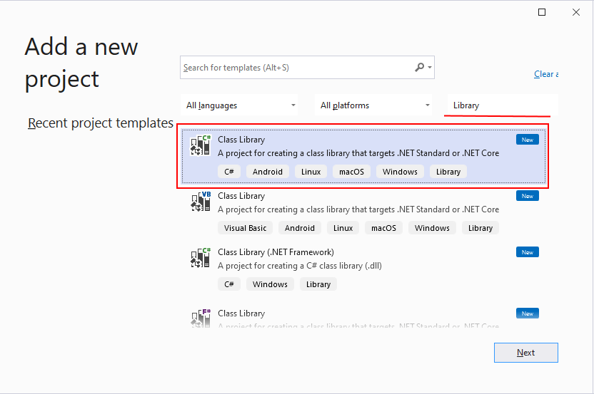

Библиотека классов определяет типы и методы, которые могут быть вызваны из любого приложения. Если библиотека предназначена для .NET Standard 2.0, она может быть вызвана любой реализацией .NET (включая .NET Framework), которая поддерживает .NET Standard 2.0. Если библиотека предназначена для .NET 8, она может вызываться любым приложением, предназначенным для .NET 8. В этом руководстве показано, как использовать .NET 8. Когда вы завершите создание библиотеки классов, можете распространить ее как пакет NuGet или включить как компонент в состав приложения, в котором она используется.
Добавьте консольное приложение, использующее библиотеку классов. В приложении пользователю будет предложено ввести строку и сообщить, начинается ли строка с символа верхнего регистра. Добавьте к решению новое консольное приложение .NET под названием "Демонстрация". Щелкните решение в обозревателе решений правой кнопкой мыши и выберите Добавить>Новый проект. На странице Добавить новый проект введите в поле поиска консоль. Выберите C# или Visual Basic из списка языков, а затем — Все платформы из списка платформ. Выберите шаблон Консольное приложение и нажмите Далее. На странице Настроить новый проект введите Демонстрация в поле Имя проекта. Теперь щелкните Далее. На странице "Дополнительные сведения" выберите .NET 8 (предварительная версия) в поле Framework. Щелкните Создать.

using System;
using System.Collections.Generic;
using System.Linq;
using System.Text;
using System.Text.RegularExpressions;
using System.Threading.Tasks;
namespace Mail_LIB.dll.Mail_LIB.dll
{
public static class MailValidator
{
public static bool CheckMail(string pocta)
{
string pattern = "^[a-zA-Z0-9_.+-]+@[a-zA-Z0-9-]+\\.[a-zA-Z0-9-.]+$";
Regex regex = new Regex(pattern);
return regex.IsMatch(pocta);
}
public static bool CheckPassword(string Passwordd)
{
if (Passwordd.Length < 8)
{
return false;
}
if (!Regex.IsMatch(Passwordd, "[a-zA-Z]"))
{
return false;
}
if (!Regex.IsMatch(Passwordd, "[0-9]"))
{
return false;
}
if (!Regex.IsMatch(Passwordd, "[!@#$%^&*()_+\\-=\\[\\]{};':\"\\\\|,.<>\\/?]"))
{
return false;
}
return true;
}
}
}